겨울아, 덤벼라 · 제작 과정
처음 만든 영상은 곡을 듣지 않았다
파일은 재생됐고 검사도 모두 통과했습니다. 그런데 보고 있으면 재미가 없었습니다. 숫자를 재 보니 이유가 나왔습니다. 화면의 움직임과 곡의 크기 사이 상관이 0.002였습니다. 소리를 꺼도 같은 영상이었던 셈입니다.
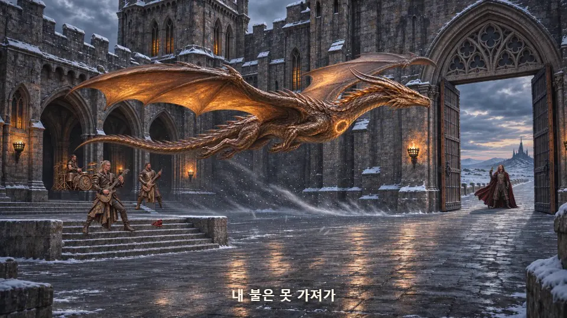
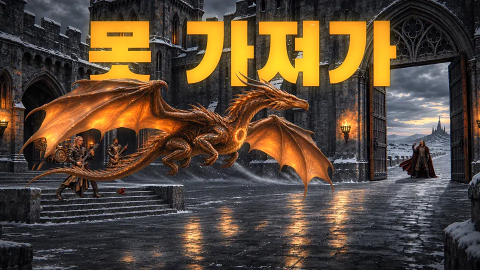
왜 재미없었나
초당 0.93장원화 234개 자세를 4분 12초에 나눴습니다. 분당 약 164박인 곡에서 연기는 1초에 한 번 바뀌었습니다.
무작위와 같은 컷컷 위치의 타격음 세기가 2.60이었습니다. 시각을 무작위로 골라도 2.90이 나옵니다.
거꾸로 된 길이곡의 절정인 "덤벼라" 얼굴은 0.74초, 주먹이 땅을 짚는 장면은 10.2초였습니다.
원인은 시간표였습니다. 모든 동작이 곡의 시각이 아니라 쇼트 길이의 비율로 계산되어 있었으니, 음악에 맞을 이유가 없었습니다. 효과를 더해서 풀릴 문제가 아니었습니다.
겨울은 그림이, 불은 음악이
정지화를 코드로 움직이면 오려 붙인 티가 납니다. 코드가 잘하는 것은 선과 빛, 입자, 글자, 그리고 시간입니다. 그래서 역할을 나눴습니다. 겨울 세계는 원화가 맡고, 노래와 불은 음악이 직접 그리는 금빛 선이 맡습니다. 피크에서 튄 선이 척추가 되고 용이 되고, 묶였다가 불씨로 줄고, 솔로에서 세 갈래로 갈라져 결박을 끊습니다.
이 방식이 통하는지 먼저 첫 후렴 26초만 새 원화 없이 만들어 비교했고, 그 결과를 보고 곡 전체로 넓혔습니다.
곡을 악기별로 나누다
분리한 드럼, 베이스, 기타, 보컬의 세기입니다. 카메라, 빛, 구름, 눈, 금빛 선, 연주 장면의 충격파가 각각 이 신호를 따라 움직입니다. 2:28에 베이스와 기타가 빠지는 자리, 3:12에 기타가 물러나고 보컬이 올라서는 자리가 그대로 보입니다.
구간별 평균을 표로 보기
감독 메모가 만든 것
측정은 어디가 어긋났는지 알려 줄 뿐입니다. 어색한 건 사람 눈이 찾았습니다. 아래는 실제 메모와 그 전후입니다.
-
흑룡이 나올 때 좌에서 우로 나오는데, 우측에서 좌측으로 나와야 될 것 같다.
바람으로 된 용이 머리를 뒤로 한 채 움직이고 있었습니다. 머리부터 오른쪽에서 왼쪽으로, 지붕 뒤를 지나가게 고쳤습니다.
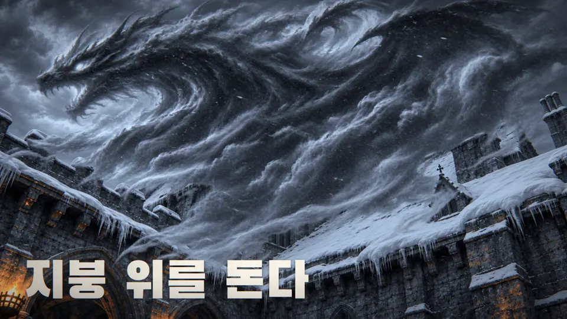
전 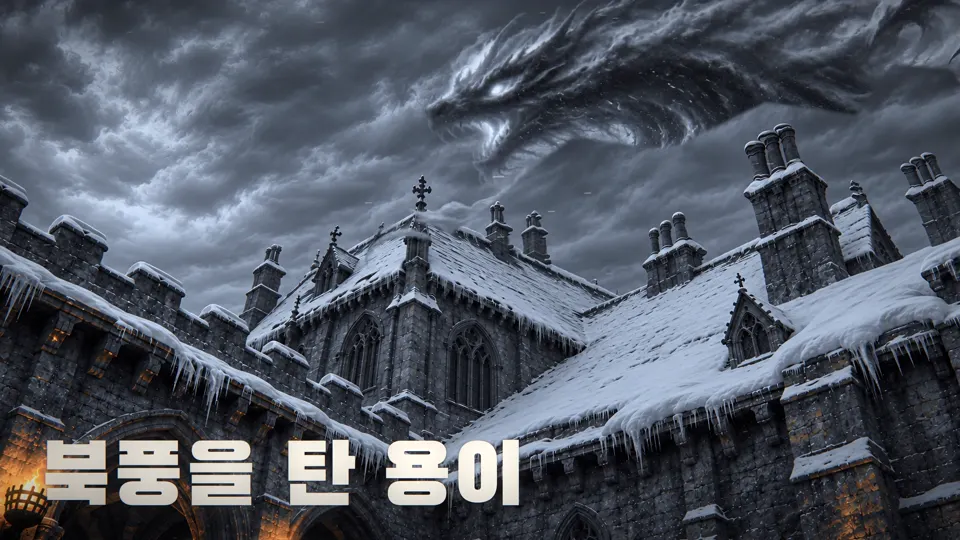
후 -
용이 얼음을 깨는 장면에서 부자연스러운 면이 있다.
벽이 서서히 나타나고 용은 그냥 옆에 있었습니다. 벽을 땅에서 솟게 하고, 용이 날아와 불을 뿜고, 닿은 지점부터 금이 퍼지도록 순서를 다시 짰습니다.
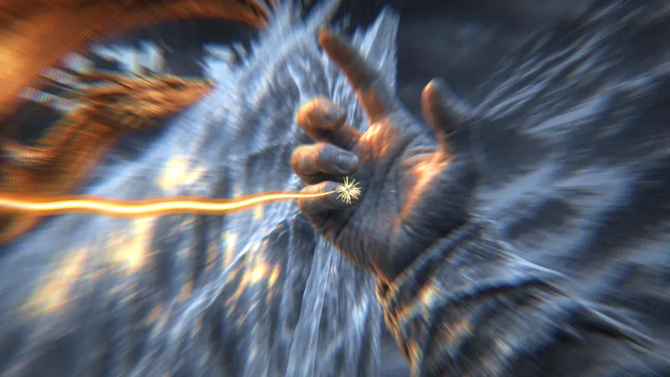
전 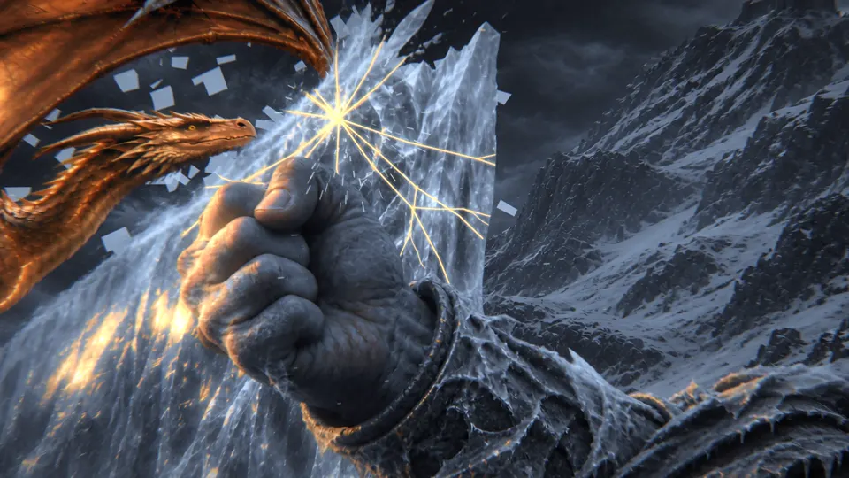
후 -
드럼을 치거나 기타를 칠 때 강력한 뭔가가 필요하다.
분리한 드럼의 타격 시각마다 북 위에서 충격파와 얼음 파편이 터지고, 기타 줄은 곡의 기타 세기에 맞춰 빛나며 떱니다.
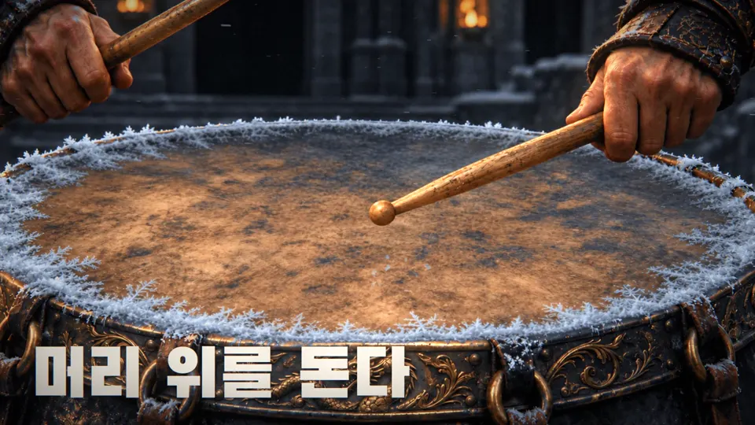
전 후 -
마지막에 드래곤이 음악으로 변하는 장면이 물 흐르듯이 트랜지션 되어야 한다.
꼬리부터 머리까지 비늘이 빛 알갱이로 부서지고, 오선과 음표의 강이 되어 보컬을 지나 펼친 손에 닿습니다.
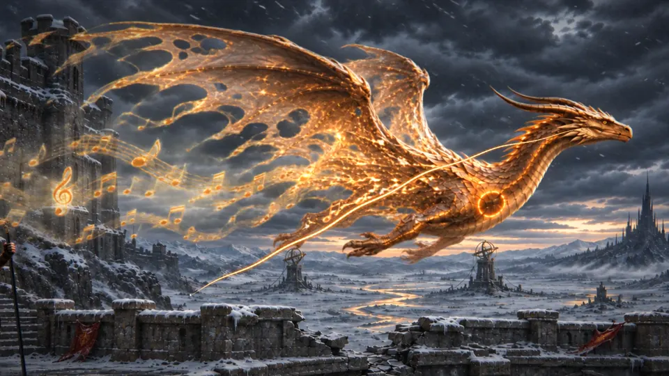
전 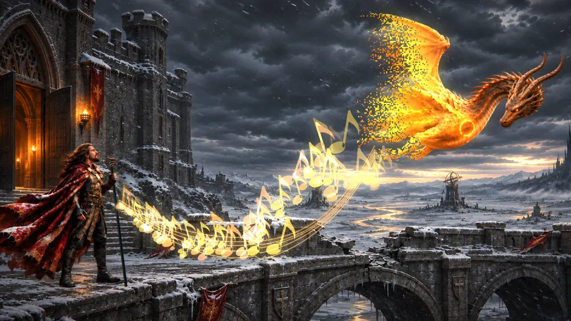
후 -
사람이 전환할 때 뭉개지는 치명적인 단점이 있다.
부드럽게 잇겠다고 두 그림 사이의 픽셀을 구부린 것이 원인이었습니다. 얼굴은 각도가 달라지면 그 사이 형태가 없습니다. 사람 쇼트에서는 변형을 없애고 빠르게 교체합니다. 그 대신 동작은 더 또렷하게 끊어집니다.
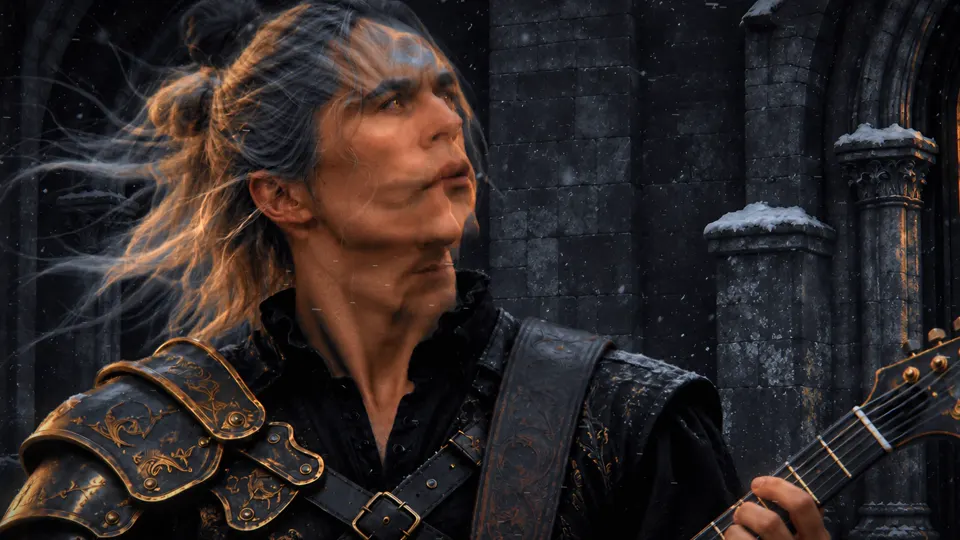
전 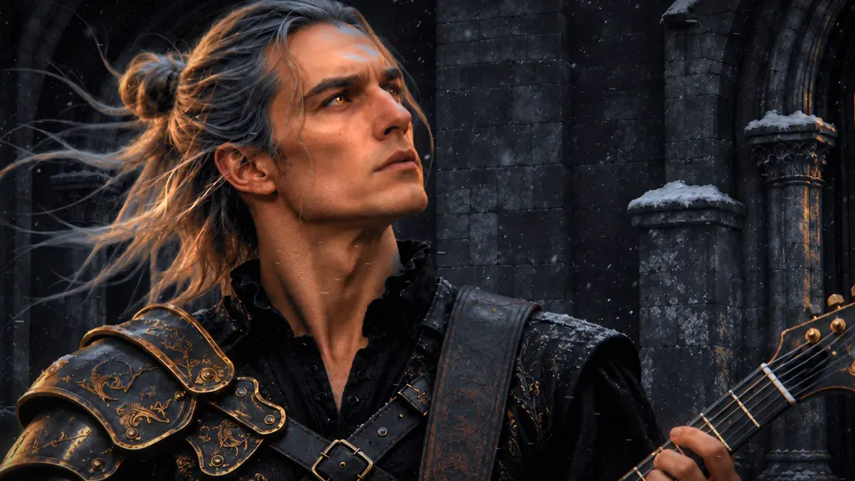
후 -
목이 잘렸다.
용을 음표로 부수는 효과가 같은 층의 보컬까지 지웠습니다. 자동 검사는 이것을 잡지 못했고, 이미 유튜브에 올린 뒤 감독이 찾아냈습니다. 보컬을 다른 층으로 분리하고 영상을 다시 올렸습니다.
전 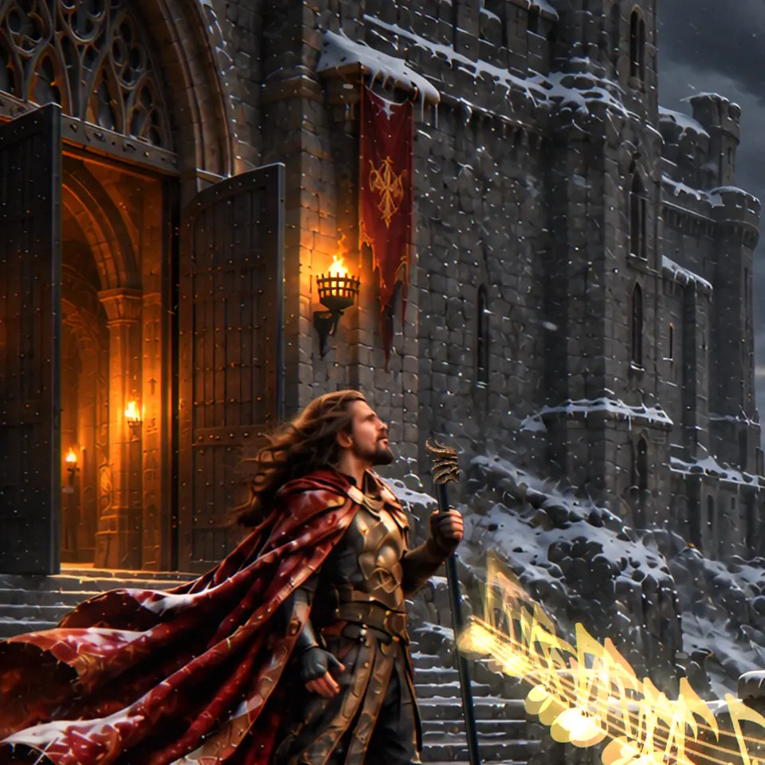
후
달라진 숫자
| 항목 | 처음 | 완성본 |
|---|---|---|
| 컷 위치의 타격음 세기 (무작위 2.90) | 2.60 | 5.81 |
| 움직임과 음악의 상관 | 0.002 | 0.302 |
| 영상 | 1672×941 | 3840×2160, 30fps |
상관의 처음 값은 곡 전체 음량, 완성본은 분리한 드럼·베이스·기타의 합산과 비교했습니다. 움직임은 이웃한 프레임의 밝기 차이이며, 그레인과 눈이 포함됩니다.
아직 못 한 것
- 움직임과 음악의 상관 0.302는 아직 약합니다. 프레임 단위로 타격에 맞물린다는 것은 측정으로 입증하지 못했습니다.
- 사람의 동작은 원화 자세 수만큼만 움직입니다. 자연스럽게 이으려면 중간 자세를 더 그려야 합니다.
- 박자와 가사 시각은 기계가 추정한 값입니다.
- 제작에 쓴 모션 도감은 기법의 원리를 옮겨 왔을 뿐, 모듈을 그대로 실행하지는 않았습니다.
쓴 것
- 음악
- 미리내맨 · Suno
- 원화
- AI 이미지 생성, Codex로 제작 · 자세와 분리 레이어 포함 현행 324장
- 연출·판단
- 미리내맨
- 재구성·코드
- Claude Code · WebGL2, Canvas, SVG 경로
- 곡 분석
- Demucs 악기 분리, pYIN 기타 음정
- 그림 처리
- Depth Anything V2 깊이 맵, Real-ESRGAN 2배 확대